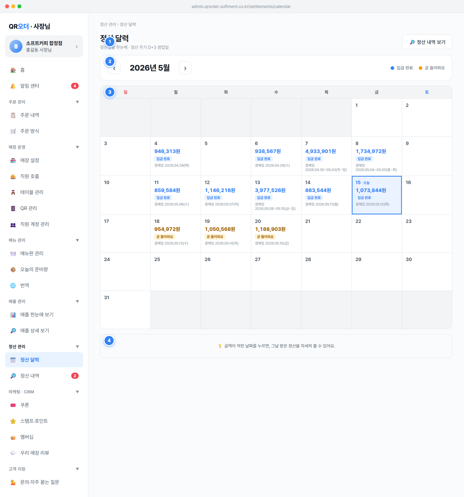

정산 관리 › 정산 달력, 타이틀 정산 달력, 서브 정산일을 한눈에 · 정산 주기 D+3 영업일으로 이 화면이 '정산금 입금일을 달력으로 보는 곳'임을 알린다.btn-ghost) 클릭 → setSection('stl-list')로 정산 내역 화면 이동. 토글/상태 없는 단순 네비게이션.addBizDays가 토·일·isHoliday 스킵). SPEC §1.1 영업일(03:00~익일 02:59) 정의를 따른다.admin.qrorder.softment.co.kr/settlements/calendar. 데이터 소스는 정산 회차 컬렉션 SETTLEMENTS(파생 집계).settleISO = addBizDays(approvalDate, 3) — base 결제일에서 영업일 3일 가산. 계산식 근거 SPEC §1.1.role=owner 전용. staff는 매출·정산 접근 불가(SPEC §1.6.2)."정산 정보는 사장님 계정에서 확인할 수 있어요."YYYY년 M월 라벨, 우측은 정산 상태 색상 범례(입금 완료 / 곧 들어와요).cal-nav, aria-label '전월') → setCalendarMonth(-1), › 익월 → setCalendarMonth(1). 보고 있는 월 상태 state.calendarMonth(기본 '2026-05')를 갱신 후 재렌더.2026-05)이 아닐 때만 오늘로 버튼(btn-ghost) 노출 → setCalendarMonth('today')로 기준월을 '2026-05'로 복귀. 현재 월에서는 숨김.cal-legend done=입금 완료(정산완료), cal-legend pending=곧 들어와요(정산대기), cal-legend hold=확인 중(보류/held, STATES §8.2). 색은 의미와 1:1.min-width:140px 중앙 정렬로 자릿수 변동에도 화살표 위치 고정.state.calendarMonth(형식 'YYYY-MM'). setCalendarMonth는 new Date(y, m-1+delta, 1)로 연·월 경계(12월↔1월) 자동 처리.isCurrentMonth = (monthKey === '2026-05')로 '오늘로' 버튼 노출 여부 결정. 운영 시 '오늘' 기준은 SPEC §1.1 영업일 기준 현재월로 대체.statusPill = (status==='정산완료') ? 'done' : 'pending'. 정산완료/대기 판정은 settleISO ≤ todayISO 문자열 비교(타임존 버그 방지).입금 완료/곧 들어와요)를 병행하고 범례에도 라벨을 붙여 색각 이상 사용자 대응(접근성, spec/08-common).aria-label 제공으로 스크린리더 접근성 확보.cal-amt(금액 ${fmt(totalSettle)}원) + cal-tag(완료=입금 완료/대기=곧 들어와요) + cal-sub(결제일 M/D(요일)) 표기. 빈 날·월 밖 칸은 비워둠(cal-cell off).selectStlDate(iso): 해당 일자 정산 회차 상세(stl-detail)로 즉시 이동(중간 정산내역 단계 생략). 정산 없는 칸은 onclick 미부착(클릭 불가).2026-05-15)은 cal-day today 강조, 선택일(state.calendarSelectedDate, 기본 2026-05-15)은 cal-cell selected 강조.selectStlDate 매칭 우선순위: ① settleISO===iso 직접 회차 → ② 같은 날 결제(approvalDays)에 속한 회차 → ③ 정산일이 가장 가까운 회차. 주말·공휴일 클릭 시 가장 가까운 회차로 진입.byDate[settleISO]=settlement로 정산일별 1셀 매핑. 첫 요일 new Date(year,month-1,1).getDay(), 말일 new Date(year,month,0).getDate()로 7배수 그리드 생성.totalSettle(받으실/입금 금액, int), status(정산완료|정산대기), approvalDate·approvalDow(결제일·요일).totalSettle = (gross − refund − feeTotal) + couponPlatformAmt. 수수료 feeTotal = feeBase + round(feeBase×0.1), 부가세는 round 규칙(SPEC §1.3). 사장님(merchant) 발행 쿠폰은 정산 제외.STL-2026MMDD-MMDD.Payment.status=paid(환불 발생=결제 취소)로 판정.곧 들어와요(pending)로만 표시.cursor:pointer.tabular-nums·천단위 콤마(fmt)로 정렬성 확보, 셀이 좁아도 잘리지 않게 표기.info-card). 달력 사용법(날짜 클릭 = 상세 보기)을 능동·친근한 톤으로 알리고, 데이터가 없을 땐 빈 상태 메시지를 대신 보여주는 보조 영역.hasData=true): 💡 금액이 적힌 날짜를 누르면, 그날 받은 정산을 자세히 볼 수 있어요. 가능형 안내 노출.hasData=false): 🗓️ 아이콘 + ${year}년 ${month}월 정산 내역이 없어요 + 보조 좌우 화살표로 다른 달을 확인할 수 있어요로 전환.hasData = SETTLEMENTS.some(s => s.settleISO.startsWith(monthKey))로 분기. 별도 API 호출 없이 핀3과 동일 데이터셋 재사용.year·month(보고 있는 월)뿐. 그 외는 고정 카피.좌우 화살표로 다른 달을 확인할 수 있어요)를 병기 — 톤앤매너 능동·긍정 규칙 준수.